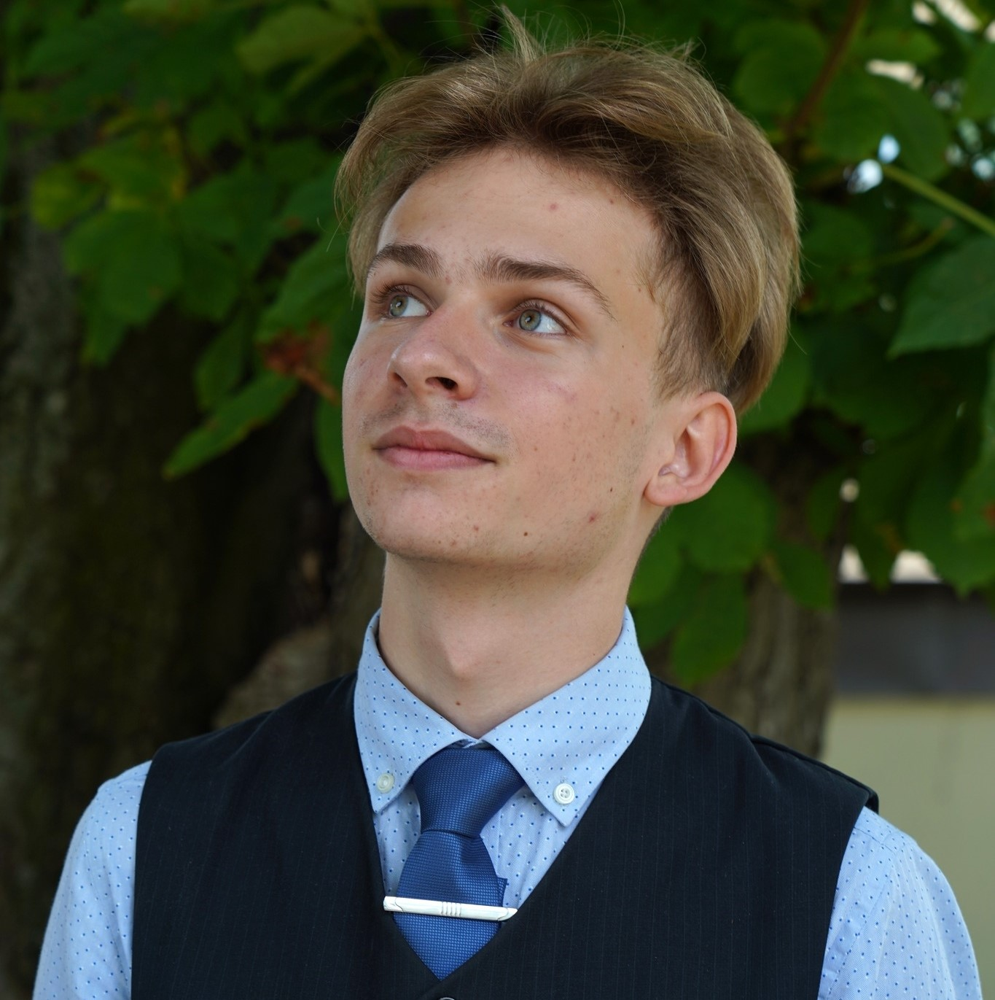

Krzysztof Baczewski
Fotografia jest dla mnie nie tylko sztuką, ale prawdziwą pasją. To magiczne połączenie światła, kolorów i emocji, które zatrzymuje chwile w czasie i pozwala mi uchwycić piękno otaczającego mnie świata. Poprzez obiektyw aparatu widzę więcej niż tylko zwykłe obrazy – odkrywam historie, uczucia i ukryte detale. Fotografia pozwala mi wyrazić siebie, eksperymentować z różnymi technikami i tworzyć niepowtarzalne dzieła sztuki.